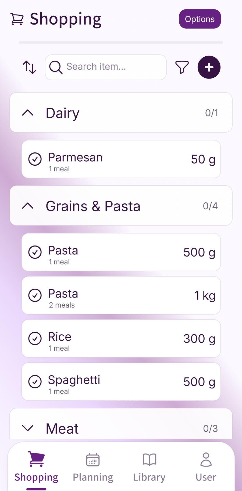

The dinner ingredients are on the list, but breakfast cereal, lunchbox wraps and bin bags depend on somebody remembering them. Rewriting those regulars every week is tiring. Buying all of them every week is unnecessary.
A master grocery list gives you a reusable reminder of what your household normally needs. Before each shop, check the items against what is at home and copy only the things you need to buy onto the current shopping list.
You can keep the master in a notebook, a shared note or a list app. Start with the groceries and household essentials you actually use, then let the list develop through ordinary shops.
Give the master and the current list different jobs
The master list answers “what should we check?” The current shopping list answers “what are we buying?” Keep that distinction visible, even if both are stored in the same app.
- The master: usual breakfast foods, packed-lunch staples, cooking basics, cleaning products, toiletries and other recurring needs.
- The current list: the quantities missing for the next shopping period, together with ingredients from the meals you have chosen.
- Occasional purchases: one-off ingredients, party supplies or a replacement kitchen item. Add these when needed without automatically making them permanent regulars.
Buying an item doesn't usually mean it should disappear from the master. It remains a prompt for future checks. Equally, an item staying on the master doesn't mean it should be bought at the next shop.
Give the two lists clear names
“Household master — check before shopping” and “This week's shop” make the difference easier to understand. If you keep a paper master, mark a new sheet with the purchases for this trip rather than crossing the regulars out permanently.
Our existing guide to remembering regular household shopping items provides prompts for the things people often miss. Here, the aim is to turn the prompts that fit your home into a reference you can keep using.
Collect the items your household uses
Start with a normal day. What goes into breakfast? What do people take to work or school? Which ingredients come up in familiar dinners? What gets used while cleaning, washing or getting ready?
Walk through the kitchen, bathroom and cleaning cupboard with those questions. Add products you recognise from your own routine. A few recent receipts or online orders can jog your memory, but don't copy every purchase without checking why it was bought.
Ask the other people in the household for their regulars. The person who makes packed lunches may notice wraps and snack pots; the person who changes the bins may notice liners. Include needs that belong to one person as well as items everyone shares.
Keep occasional ideas separate while building the first version. A spice bought for one experimental dinner doesn't have to become a permanent replacement instruction. If you start using it regularly, add it later.
You don't need to finish the whole household in one sitting. Begin with the items that repeatedly get forgotten or rewritten. Add a missing regular after the next shop, while you remember why it mattered.
Group the list around household routines
Use headings that help you check the house: breakfast, packed lunches, cooking staples, cleaning and toiletries. Your household may also need pet supplies, baby items or a group for a particular person's food preferences.
This order doesn't have to follow the supermarket. A master list is easiest to review where the items are used or stored. You can organise the current buying list by aisle afterwards.
On a small screen, scroll the table sideways to read every column.
| Group | Example entries | What to check |
|---|---|---|
| Breakfast | Milk; oats | What is left and who will be eating breakfast at home. |
| Packed lunches | Wraps; fruit | Lunches needed before the next shop and supplies already available. |
| Cleaning and household | Washing-up liquid; bin bags | Open products, unopened spares and the correct size or type. |
| Toiletries | Toothpaste; shampoo | Who uses each product and whether a replacement is already stored. |
This small example has eight regular items. It isn't a universal household checklist or a complete grocery shop. Replace its entries with the products you use, and leave out groups that don't apply.
For the trip itself, see how to arrange your shopping list by supermarket aisle. You can think in household routines while checking and in supermarket sections while shopping.
Make each entry useful to another shopper
Write enough detail that someone else can recognise the intended product. “Bin bags — fits the kitchen bin” needs a size or pack reference if the other shopper doesn't know it. “Milk” may need a type when different people use different products.
Include a preferred size, variety or brand when it matters. Where substitutions are fine, say so. Where a product must meet a particular requirement, record that clearly and check the actual product information when buying; a familiar name alone isn't a substitute for that check.
You can add a simple replacement cue for things that are easy to overbuy. For example, “check the spare before adding shampoo” or “keep one unopened washing-up liquid if storage allows”. Choose the cue together rather than treating somebody else's preferred stock level as a rule.
A cue is easier to maintain than a pretend inventory. If nobody is updating a number every time food is used, don't rely on an old stock count just because it is written beside the item. Look at what is there before deciding to buy.
Choose what belongs on this week's shop
Open the master before finalising your shopping list. Check the regulars against supplies and the household's plans, then bring the missing quantities together with your meal ingredients.
- Check the period: decide which days the next shop needs to cover, including lunches, visitors or evenings out.
- Review the master: look at each relevant group and identify what will need replacing.
- Write the buying quantity: add only the amount missing for that period or the reserve you deliberately keep.
- Combine with meals: check for the same product appearing both as a regular and as a recipe ingredient.
- Agree the current list: make sure the shopper can find the final version.
Eight regulars to check, three purchases to make
In the example household, milk won't cover the next shopping period, the wraps have run out and the bin bags need replacing. Oats and fruit are sufficient. There is already a spare washing-up liquid, toothpaste and shampoo.
The household decides its current buying list needs:
- One carton of the milk they use.
- One packet of wraps.
- One roll of the correct bin bags.
All eight items stay on the master as future reminders. Only these three go onto this shop, alongside the dinner ingredients and any one-off needs.
The quantities belong to this illustrative household; choose yours from actual use and what is left. You don't have to buy something simply because its usual weekly purchase has come round.
Our meal-plan-to-shopping-list guide covers bringing recipe ingredients together. If unwanted extras are the recurring problem, use the routine for checking supplies and preventing duplicate purchases.
Use regular items alongside the meal plan
Fameally lets you keep regular shopping items beside the ingredients needed for meals. Its published Individual and Family plans include adding weekly essentials in one tap. That can reduce repeated entry once you know which items belong in your household routine.

Keep the master-list check before the purchase decision. If you use a quick-add routine, review the resulting list and remove anything already covered at home. Due Soon can also prompt a check using purchase patterns; it doesn't measure current stock or automatically decide what to buy.
The manual master in this guide works in a note or on paper too. It doesn't depend on a dedicated screen called “Master list” or an automatically maintained cupboard inventory.
Keep the master relevant
A useful master changes when the household changes. Packed lunches might pause during a holiday. A child may stop eating a breakfast food. Someone working from home may need lunch ingredients that were never part of the old routine.
When a regular stops being regular, remove it or move it into an occasional group. When an item is missed repeatedly, add a clearer prompt. Keep older versions out of the shopper's way so nobody mistakes an abandoned list for the current reference.
Agree where the master lives and who can update it. If it is shared, make a small explanation when removing an entry another person uses. A list that reflects one person's memory alone can miss the rest of the household.
Review any copied quantities too. Visitors, a larger pack or a change in how often you shop can alter the need. The master should make checking easier, while leaving room for that week's decisions.
Build your first master list
- Choose one place to keep the household reference.
- Add the regular groceries and essentials you actually use.
- Group them around the routines or cupboards you check.
- Add product details and useful replacement cues.
- Select this shop's needs after checking supplies.
- Update the reference when habits change.
A few common questions
- How long should a master grocery list be?
- Long enough to remind your household of its regular needs. Start with the repeatedly used items that are easy to forget; there is no required number of entries.
- Is it the same as this week's shopping list?
- The master is a reusable reference. The current list contains the things you have decided to buy for this trip after checking what is already at home.
- Should cleaning products and toiletries be included?
- Include them if they belong to the same household shopping routine. Separate headings help you review them without mixing them into recipe ingredients.
- Does Fameally automatically keep the master as a stock inventory?
- This guide uses manual checks. Regular items and purchase-pattern suggestions can support the routine, but they don't establish the quantities currently in your cupboards.
Sources and feature checks
Fameally's published regular-item workflow, access tiers and Due Soon explanation checked on 4 November 2026. The eight-item example is a manual planning method, not a download, a measured saving or a claim about automatic stock tracking.
- Fameally's planning and shopping workflow and regular-item features in the current plans.
- Due Soon: regular items and purchase-pattern suggestions.
- Fameally App Store listing and Google Play listing.
Keep planning
Keep your regular shop within reach.
Save familiar meals, build the ingredient list and review household essentials before buying.